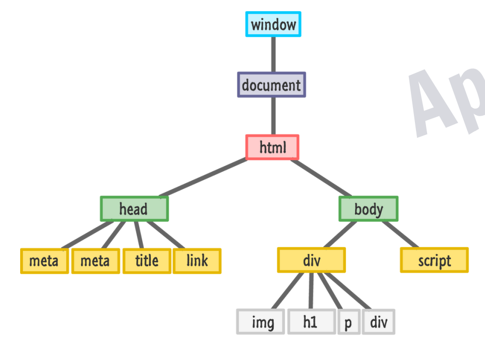

Basics of HTML and CSS
Uses of making 3 different files of HTML, CSS and JS :
1.Readability
2.Modular(different chunks of code with different uses)
3.Browser Caching
Window Object :
The window object represents an open window in a browser.
It is browser's object (not JavaScript's) & is automatically created by browser.
It is a global object with lots of properties & methods
Document Object Modal DOM
console.dir
Tree like structure of DOM : every node can be considered as a object and have several childNodes

DOM Accessing Elements
getElementsByClassName and getElementsByTagName Returns an HTML Collection
Query Selector || RETURNS NODE LIST
DOM Manipulating Elements
Difference between InnerText and InnerHTML
visibility is set as HIDDEN